import pandas as pd
import matplotlib as mpl
import matplotlib.pyplot as plt
import numpy as np
from pathlib import Path
import pingouin as pg
from lets_plot import *
LetsPlot.setup_html(no_js=True)
## You don't need to use these settings yourself,
## they are just here to make the charts look nicer!
# Set the plot style for prettier charts:
plt.style.use(
"https://raw.githubusercontent.com/aeturrell/core_python/main/plot_style.txt"
)practice1
演练1.1
| Year | Jan | Feb | Mar | Apr | May | Jun | Jul | Aug | Sep | Oct | Nov | Dec | J-D | D-N | DJF | MAM | JJA | SON | |
|---|---|---|---|---|---|---|---|---|---|---|---|---|---|---|---|---|---|---|---|
| 0 | 1880 | -0.39 | -0.53 | -0.23 | -0.30 | -0.05 | -0.18 | -0.22 | -0.25 | -0.24 | -0.30 | -0.43 | -0.42 | -0.30 | NaN | NaN | -0.20 | -0.22 | -0.32 |
| 1 | 1881 | -0.31 | -0.25 | -0.06 | -0.02 | 0.05 | -0.34 | 0.09 | -0.06 | -0.28 | -0.44 | -0.37 | -0.24 | -0.19 | -0.20 | -0.33 | -0.01 | -0.10 | -0.37 |
| 2 | 1882 | 0.25 | 0.21 | 0.02 | -0.30 | -0.23 | -0.29 | -0.28 | -0.15 | -0.25 | -0.52 | -0.33 | -0.68 | -0.21 | -0.17 | 0.08 | -0.17 | -0.24 | -0.37 |
| 3 | 1883 | -0.57 | -0.66 | -0.15 | -0.30 | -0.26 | -0.12 | -0.06 | -0.23 | -0.34 | -0.17 | -0.44 | -0.15 | -0.29 | -0.33 | -0.64 | -0.23 | -0.14 | -0.32 |
| 4 | 1884 | -0.16 | -0.11 | -0.64 | -0.59 | -0.36 | -0.41 | -0.41 | -0.52 | -0.45 | -0.44 | -0.58 | -0.47 | -0.43 | -0.40 | -0.14 | -0.53 | -0.45 | -0.49 |
<class 'pandas.core.frame.DataFrame'>
RangeIndex: 145 entries, 0 to 144
Data columns (total 19 columns):
# Column Non-Null Count Dtype
--- ------ -------------- -----
0 Year 145 non-null int64
1 Jan 145 non-null float64
2 Feb 145 non-null float64
3 Mar 145 non-null float64
4 Apr 145 non-null float64
5 May 145 non-null float64
6 Jun 145 non-null float64
7 Jul 145 non-null float64
8 Aug 145 non-null float64
9 Sep 145 non-null float64
10 Oct 145 non-null float64
11 Nov 145 non-null float64
12 Dec 144 non-null float64
13 J-D 144 non-null float64
14 D-N 144 non-null float64
15 DJF 144 non-null float64
16 MAM 145 non-null float64
17 JJA 145 non-null float64
18 SON 145 non-null float64
dtypes: float64(18), int64(1)
memory usage: 21.6 KB温度异常是指相对于某个参考时期的平均温度的偏离情况。它是一种衡量当前温度与长期平均温度差值的方式，重点在于体现温度的变化情况，而不是实际的温度数值。温度异常有助于突出长期的温度变化趋势。对于研究气候变化这样的长期过程，关注温度相对于历史平均值的变化更有意义。它可以过滤掉一些短期的、局部的温度波动，让研究人员更准确地把握地球气候系统是在变暖还是变冷这样的宏观趋势。
演练1.2
绘制温度和时间折线图
| Jan | Feb | Mar | Apr | May | Jun | Jul | Aug | Sep | Oct | Nov | Dec | J-D | D-N | DJF | MAM | JJA | SON | |
|---|---|---|---|---|---|---|---|---|---|---|---|---|---|---|---|---|---|---|
| Year | ||||||||||||||||||
| 1880 | -0.39 | -0.53 | -0.23 | -0.30 | -0.05 | -0.18 | -0.22 | -0.25 | -0.24 | -0.30 | -0.43 | -0.42 | -0.30 | NaN | NaN | -0.20 | -0.22 | -0.32 |
| 1881 | -0.31 | -0.25 | -0.06 | -0.02 | 0.05 | -0.34 | 0.09 | -0.06 | -0.28 | -0.44 | -0.37 | -0.24 | -0.19 | -0.20 | -0.33 | -0.01 | -0.10 | -0.37 |
| 1882 | 0.25 | 0.21 | 0.02 | -0.30 | -0.23 | -0.29 | -0.28 | -0.15 | -0.25 | -0.52 | -0.33 | -0.68 | -0.21 | -0.17 | 0.08 | -0.17 | -0.24 | -0.37 |
| 1883 | -0.57 | -0.66 | -0.15 | -0.30 | -0.26 | -0.12 | -0.06 | -0.23 | -0.34 | -0.17 | -0.44 | -0.15 | -0.29 | -0.33 | -0.64 | -0.23 | -0.14 | -0.32 |
| 1884 | -0.16 | -0.11 | -0.64 | -0.59 | -0.36 | -0.41 | -0.41 | -0.52 | -0.45 | -0.44 | -0.58 | -0.47 | -0.43 | -0.40 | -0.14 | -0.53 | -0.45 | -0.49 |
| Jan | Feb | Mar | Apr | May | Jun | Jul | Aug | Sep | Oct | Nov | Dec | J-D | D-N | DJF | MAM | JJA | SON | |
|---|---|---|---|---|---|---|---|---|---|---|---|---|---|---|---|---|---|---|
| Year | ||||||||||||||||||
| 2020 | 1.59 | 1.69 | 1.66 | 1.39 | 1.27 | 1.14 | 1.10 | 1.12 | 1.19 | 1.21 | 1.58 | 1.18 | 1.34 | 1.36 | 1.56 | 1.44 | 1.12 | 1.33 |
| 2021 | 1.25 | 0.96 | 1.20 | 1.13 | 1.05 | 1.21 | 1.07 | 1.02 | 1.05 | 1.29 | 1.29 | 1.17 | 1.14 | 1.14 | 1.13 | 1.13 | 1.10 | 1.21 |
| 2022 | 1.24 | 1.16 | 1.41 | 1.09 | 1.02 | 1.13 | 1.06 | 1.17 | 1.15 | 1.31 | 1.09 | 1.06 | 1.16 | 1.17 | 1.19 | 1.17 | 1.12 | 1.19 |
| 2023 | 1.29 | 1.29 | 1.64 | 1.01 | 1.13 | 1.19 | 1.44 | 1.57 | 1.67 | 1.88 | 1.97 | 1.85 | 1.50 | 1.43 | 1.22 | 1.26 | 1.40 | 1.84 |
| 2024 | 1.67 | 1.93 | 1.77 | 1.79 | 1.44 | 1.54 | 1.42 | 1.42 | 1.58 | 1.72 | 1.90 | NaN | NaN | 1.67 | 1.82 | 1.67 | 1.46 | 1.73 |
fig, ax = plt.subplots()
df["Feb"].plot(ax=ax)
ax.set_ylabel("y label")
ax.set_xlabel("x label")
ax.set_title("title")
plt.show()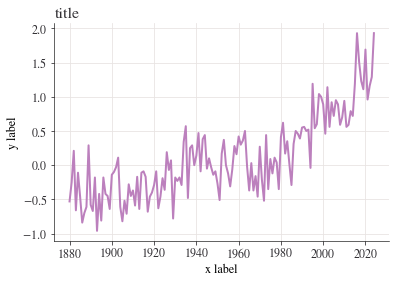
fig, ax = plt.subplots()
ax.plot(df.index, df["Jan"])
ax.set_ylabel("y label")
ax.set_xlabel("x label")
ax.set_title("title")
plt.show()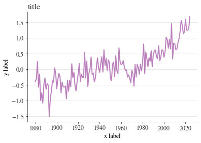
month = "Jan"
fig, ax = plt.subplots()
ax.axhline(0, color="orange")
ax.annotate("1951—1980 average", xy=(0.66, -0.2), xycoords=("figure fraction", "data"))
df[month].plot(ax=ax)
ax.set_title(
f"Average temperature anomaly in {month} \n in the northern hemisphere (1880—{df.index.max()})"
)
ax.set_ylabel("Annual temperature anomalies");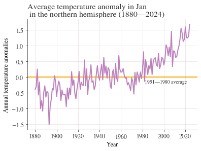
问题 2 至 4 (a)中的图表对温度和时间之间的关系可以发现，在1880年到1930年之间，每年一月份的气温相比于1951-1980年平均气温要低，后续的关系呈正相关关系，即随着时间的增长气温也随之增长。
演练1.3
制作年气温异常的折线图
month = "J-D"
fig, ax = plt.subplots()
ax.axhline(0, color="orange")
ax.annotate("1951—1980 average", xy=(0.68, -0.2), xycoords=("figure fraction", "data"))
df[month].plot(ax=ax)
ax.set_title(
f"Average annual temperature anomaly in \n in the northern hemisphere (1880—{df.index.max()})"
)
ax.set_ylabel("Annual temperature anomalies");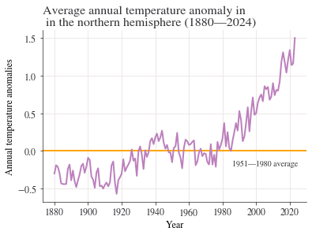
从上图的气温可以看出气温随着年份的增长而增长，尤其是近年来呈指数型增长，因此政府需要关注气候变化。
演练1.4
创建直方图和频率表
Year
2005 1981—2010
2006 1981—2010
2007 1981—2010
2008 1981—2010
2009 1981—2010
2010 1981—2010
2011 NaN
2012 NaN
2013 NaN
2014 NaN
2015 NaN
2016 NaN
2017 NaN
2018 NaN
2019 NaN
2020 NaN
2021 NaN
2022 NaN
2023 NaN
2024 NaN
Name: Period, dtype: category
Categories (3, object): ['1921—1950' < '1951—1980' < '1981—2010']Year
1880 Jun -0.18
Jul -0.22
Aug -0.25
1881 Jun -0.34
Jul 0.09
dtype: float64fig, axes = plt.subplots(ncols=3, figsize=(9, 4), sharex=True, sharey=True)
for ax, period in zip(axes, df["Period"].dropna().unique()):
df.loc[df["Period"] == period, list_of_months].stack().hist(ax=ax)
ax.set_title(period)
plt.suptitle("Histogram of temperature anomalies")
axes[1].set_xlabel("Summer temperature distribution")
plt.tight_layout();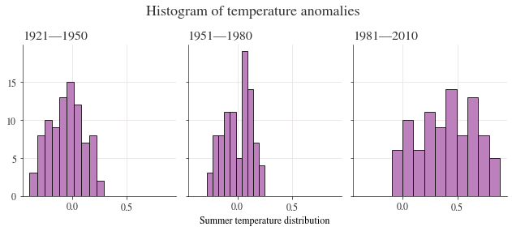
演练1.5
temp_all_months = df.loc[(df.index >= 1951) & (df.index <= 1980), "Jan":"Dec"]
temp_all_months = (
temp_all_months.stack()
.reset_index()
.rename(columns={"level_1": "month", 0: "values"})
)
temp_all_months| Year | month | values | |
|---|---|---|---|
| 0 | 1951 | Jan | -0.36 |
| 1 | 1951 | Feb | -0.51 |
| 2 | 1951 | Mar | -0.18 |
| 3 | 1951 | Apr | 0.06 |
| 4 | 1951 | May | 0.17 |
| ... | ... | ... | ... |
| 355 | 1980 | Aug | 0.10 |
| 356 | 1980 | Sep | 0.10 |
| 357 | 1980 | Oct | 0.12 |
| 358 | 1980 | Nov | 0.21 |
| 359 | 1980 | Dec | 0.09 |
360 rows × 3 columns
quantiles = [0.3, 0.7]
list_of_percentiles = np.quantile(temp_all_months["values"], q=quantiles)
print(f"The cold threshold of {quantiles[0]*100}% is {list_of_percentiles[0]}")
print(f"The hot threshold of {quantiles[1]*100}% is {list_of_percentiles[1]}")The cold threshold of 30.0% is -0.1
The hot threshold of 70.0% is 0.1根据上述的表格信息和结果输出，我们在这段时间内更频繁地经历更热的天气。
演练1.6
# Create a variable that has years 1981 to 2010, and months Jan to Dec (inclusive)
temp_all_months = df.loc[(df.index >= 1981) & (df.index <= 2010), "Jan":"Dec"]
# Put all the data in stacked format and give the new columns sensible names
temp_all_months = (
temp_all_months.stack()
.reset_index()
.rename(columns={"level_1": "month", 0: "values"})
)
# Take a look at the start of this data data:
temp_all_months.head()| Year | month | values | |
|---|---|---|---|
| 0 | 1981 | Jan | 0.80 |
| 1 | 1981 | Feb | 0.62 |
| 2 | 1981 | Mar | 0.68 |
| 3 | 1981 | Apr | 0.39 |
| 4 | 1981 | May | 0.18 |
演练1.7
temp_all_months = (
df.loc[:, "DJF":"SON"]
.stack()
.reset_index()
.rename(columns={"level_1": "Season", 0: "Values"})
)
temp_all_months["Period"] = pd.cut(
temp_all_months["Year"],
bins=[1921, 1950, 1980, 2010],
labels=["1921—1950", "1951—1980", "1981—2010"],
ordered=True,
)
# Take a look at a cut of the data using `.iloc`, which provides position
temp_all_months.iloc[-135:-125]| Year | Season | Values | Period | |
|---|---|---|---|---|
| 444 | 1991 | MAM | 0.45 | 1981—2010 |
| 445 | 1991 | JJA | 0.42 | 1981—2010 |
| 446 | 1991 | SON | 0.32 | 1981—2010 |
| 447 | 1992 | DJF | 0.43 | 1981—2010 |
| 448 | 1992 | MAM | 0.29 | 1981—2010 |
| 449 | 1992 | JJA | -0.04 | 1981—2010 |
| 450 | 1992 | SON | -0.15 | 1981—2010 |
| 451 | 1993 | DJF | 0.37 | 1981—2010 |
| 452 | 1993 | MAM | 0.31 | 1981—2010 |
| 453 | 1993 | JJA | 0.12 | 1981—2010 |
grp_mean_var = temp_all_months.groupby(["Season", "Period"])["Values"].agg(
[np.mean, np.var]
)
grp_mean_var| mean | var | ||
|---|---|---|---|
| Season | Period | ||
| DJF | 1921—1950 | -0.025862 | 0.057489 |
| 1951—1980 | -0.002000 | 0.050548 | |
| 1981—2010 | 0.523333 | 0.078975 | |
| JJA | 1921—1950 | -0.053448 | 0.021423 |
| 1951—1980 | 0.000000 | 0.014697 | |
| 1981—2010 | 0.400000 | 0.067524 | |
| MAM | 1921—1950 | -0.041034 | 0.031302 |
| 1951—1980 | 0.000333 | 0.025245 | |
| 1981—2010 | 0.509333 | 0.075737 | |
| SON | 1921—1950 | 0.083448 | 0.027473 |
| 1951—1980 | -0.001333 | 0.026205 | |
| 1981—2010 | 0.429000 | 0.111127 |
min_year = 1880
(
ggplot(temp_all_months, aes(x="Year", y="Values", color="Season"))
+ geom_abline(slope=0, color="black", size=1)
+ geom_line(size=1)
+ labs(
title=f"Average annual temperature anomaly in \n in the northern hemisphere ({min_year}—{temp_all_months['Year'].max()})",
y="Annual temperature anomalies",
)
+ scale_x_continuous(format="d")
+ geom_text(
x=min_year, y=0.1, label="1951—1980 average", hjust="left", color="black"
)
)演练1.8
| Year | Month | Monthly average | Interpolated | Trend | |
|---|---|---|---|---|---|
| 0 | 1958 | 3 | 315.71 | 315.71 | 314.62 |
| 1 | 1958 | 4 | 317.45 | 317.45 | 315.29 |
| 2 | 1958 | 5 | 317.50 | 317.50 | 314.71 |
| 3 | 1958 | 6 | -99.99 | 317.10 | 314.85 |
| 4 | 1958 | 7 | 315.86 | 315.86 | 314.98 |
| Year | Month | Monthly average | Interpolated | Trend | |
|---|---|---|---|---|---|
| 3 | 1958 | 6 | -99.99 | 317.10 | 314.85 |
| 15 | 1959 | 6 | 318.15 | 318.15 | 315.92 |
| 27 | 1960 | 6 | 319.59 | 319.59 | 317.36 |
| 39 | 1961 | 6 | 319.77 | 319.77 | 317.48 |
| 51 | 1962 | 6 | 320.55 | 320.55 | 318.27 |
| Year | Jun | Trend | |
|---|---|---|---|
| 0 | 1958 | 0.05 | 314.85 |
| 1 | 1959 | 0.14 | 315.92 |
| 2 | 1960 | 0.18 | 317.36 |
| 3 | 1961 | 0.18 | 317.48 |
| 4 | 1962 | -0.13 | 318.27 |
(
ggplot(df_temp_co2, aes(x="Jun", y="Trend"))
+ geom_point(color="black", size=3)
+ labs(
title="Scatterplot of temperature anomalies vs carbon dioxide emissions",
y="Carbon dioxide levels (trend, mole fraction)",
x="Temperature anomaly (degrees Celsius)",
)
)| Jun | Trend | |
|---|---|---|
| Jun | 1.000000 | 0.915419 |
| Trend | 0.915419 | 1.000000 |
(
ggplot(df_temp_co2, aes(x="Year", y="Jun"))
+ geom_line(size=1)
+ labs(
title="June temperature anomalies",
)
+ scale_x_continuous(format="d")
)base_plot = ggplot(df_temp_co2) + scale_x_continuous(format="d")
plot_p = (
base_plot
+ geom_line(aes(x="Year", y="Jun"), size=1)
+ labs(title="June temperature anomalies")
)
plot_q = (
base_plot
+ geom_line(aes(x="Year", y="Trend"), size=1)
+ labs(title="Carbon dioxide emissions")
)
gggrid([plot_p, plot_q], ncol=2)从上述图标可以看出，年份与CO_2的关系呈正相关关系，同时业余气温变化呈正相关关系，而且从它们的变化曲线可以看出均呈指数型增长，因此气温变化异常与二氧化碳有关系。
practice2
import pandas as pd
import matplotlib as mpl
import matplotlib.pyplot as plt
import numpy as np
from pathlib import Path
import pingouin as pg
from lets_plot import *
LetsPlot.setup_html(no_js=True)
### You don't need to use these settings yourself
### — they are just here to make the book look nicer!
# Set the plot style for prettier charts:
plt.style.use(
"https://raw.githubusercontent.com/aeturrell/core_python/main/plot_style.txt"
)演练2.1
data = {
"Copenhagen": [14.1, 14.1, 13.7, 12.9, 12.3, 11.7, 10.8, 10.6, 9.8, 5.3],
"Dniprop": [11.0, 12.6, 12.1, 11.2, 11.3, 10.5, 9.5, 10.3, 9.0, 8.7],
"Minsk": [12.8, 12.3, 12.6, 12.3, 11.8, 9.9, 9.9, 8.4, 8.3, 6.9],
}
df = pd.DataFrame.from_dict(data)
df.head()| Copenhagen | Dniprop | Minsk | |
|---|---|---|---|
| 0 | 14.1 | 11.0 | 12.8 |
| 1 | 14.1 | 12.6 | 12.3 |
| 2 | 13.7 | 12.1 | 12.6 |
| 3 | 12.9 | 11.2 | 12.3 |
| 4 | 12.3 | 11.3 | 11.8 |
演练2.2
test_df=
City A City B
0 14.1 11.0
1 14.1 99.0
2 13.7 12.1
test_copy=
City A City B
0 14.1 11.0
1 14.1 12.6
2 13.7 12.1
<class 'pandas.core.frame.DataFrame'>
Index: 10 entries, 1 to 10
Data columns (total 16 columns):
# Column Non-Null Count Dtype
--- ------ -------------- -----
0 Copenhagen 10 non-null object
1 Dnipropetrovs’k 10 non-null object
2 Minsk 10 non-null object
3 St. Gallen 10 non-null object
4 Muscat 10 non-null object
5 Samara 10 non-null object
6 Zurich 10 non-null object
7 Boston 10 non-null object
8 Bonn 10 non-null object
9 Chengdu 10 non-null object
10 Seoul 10 non-null object
11 Riyadh 10 non-null object
12 Nottingham 10 non-null object
13 Athens 10 non-null object
14 Istanbul 10 non-null object
15 Melbourne 10 non-null object
dtypes: object(16)
memory usage: 1.3+ KB演练2.3
演练2.4
partial_names_list = ["F. Kennedy", "Lennon", "Maynard Keynes", "Wayne"]
["John " + name for name in partial_names_list]['John F. Kennedy', 'John Lennon', 'John Maynard Keynes', 'John Wayne']# Create new dataframe with bars in
compare_grps = pd.DataFrame(
[mean_n_c.loc[[1, 10]], mean_p_c.loc[[1, 10]]],
index=["Without punishment", "With punishment"],
)
# Rename columns to have 'round' in them
compare_grps.columns = ["Round " + str(i) for i in compare_grps.columns]
# Swap the column and index variables around with the transpose function, ready for plotting (.T is transpose)
compare_grps = compare_grps.T
# Make a bar chart
compare_grps.plot.bar(rot=0);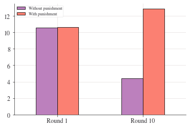
演练2.5
| std | var | mean | |
|---|---|---|---|
| 1 | 2.020724 | 4.083325 | 10.578313 |
| 2 | 2.238129 | 5.009220 | 10.628398 |
| 3 | 2.329569 | 5.426891 | 10.407079 |
| 4 | 2.068213 | 4.277504 | 9.813033 |
| 5 | 2.108329 | 4.445049 | 9.305433 |
| 6 | 2.240881 | 5.021549 | 8.454844 |
| 7 | 2.136614 | 4.565117 | 7.837568 |
| 8 | 2.349442 | 5.519880 | 7.376388 |
| 9 | 2.413845 | 5.826645 | 6.392985 |
| 10 | 2.187126 | 4.783520 | 4.383769 |
fig, ax = plt.subplots()
n_c["mean"].plot(ax=ax, label="mean")
# mean + 2 standard deviations
(n_c["mean"] + 2 * n_c["std"]).plot(ax=ax, ylim=(0, None), color="red", label="±2 s.d.")
# mean - 2 standard deviations
(n_c["mean"] - 2 * n_c["std"]).plot(ax=ax, ylim=(0, None), color="red", label="")
for i in range(len(data_n.columns)):
ax.scatter(x=data_n.index, y=data_n.iloc[:, i], color="k", alpha=0.3)
ax.legend()
ax.set_ylabel("Average contribution")
ax.set_title("Contribution to public goods game without punishment")
plt.show();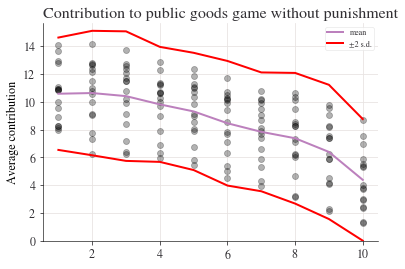
fig, ax = plt.subplots()
p_c["mean"].plot(ax=ax, label="mean")
# mean + 2 sd
(p_c["mean"] + 2 * p_c["std"]).plot(ax=ax, ylim=(0, None), color="red", label="±2 s.d.")
# mean - 2 sd
(p_c["mean"] - 2 * p_c["std"]).plot(ax=ax, ylim=(0, None), color="red", label="")
for i in range(len(data_p.columns)):
ax.scatter(x=data_p.index, y=data_p.iloc[:, i], color="k", alpha=0.3)
ax.legend()
ax.set_ylabel("Average contribution")
ax.set_title("Contribution to public goods game with punishment")
plt.show();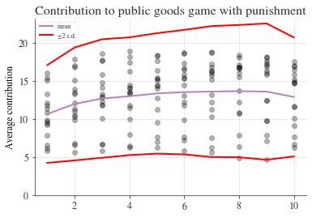
演练2.6
Period
1 10.199675
2 12.185065
3 12.689935
4 12.625000
5 12.140375
6 12.827541
7 13.098931
8 13.482621
9 13.496754
10 11.307360
dtype: float64# A lambda function accepting three inputs, a, b, and c, and calculating the sum of the squares
test_function = lambda a, b, c: a**2 + b**2 + c**2
# Now we apply the function by handing over (in parenthesis) the following inputs: a=3, b=4 and c=5
test_function(3, 4, 5)50演练2.7
| range | max | min | std | mean | |
|---|---|---|---|---|---|
| 1 | 6.14 | 14.10 | 7.96 | 2.02 | 10.58 |
| 10 | 7.38 | 8.68 | 1.30 | 2.19 | 4.38 |
演练2.8
| T | dof | alternative | p-val | CI95% | cohen-d | BF10 | power | |
|---|---|---|---|---|---|---|---|---|
| T-test | -0.063782 | 30 | two-sided | 0.949567 | [-2.0, 1.87] | 0.02255 | 0.337 | 0.050437 |
pratice3_1
| rownames | name | year | month | day | hour | lat | long | status | category | wind | pressure | tropicalstorm_force_diameter | hurricane_force_diameter | |
|---|---|---|---|---|---|---|---|---|---|---|---|---|---|---|
| 0 | 1 | Amy | 1975 | 6 | 27 | 0 | 27.5 | -79.0 | tropical depression | NaN | 25 | 1013 | NaN | NaN |
| 1 | 2 | Amy | 1975 | 6 | 27 | 6 | 28.5 | -79.0 | tropical depression | NaN | 25 | 1013 | NaN | NaN |
| 2 | 3 | Amy | 1975 | 6 | 27 | 12 | 29.5 | -79.0 | tropical depression | NaN | 25 | 1013 | NaN | NaN |
| 3 | 4 | Amy | 1975 | 6 | 27 | 18 | 30.5 | -79.0 | tropical depression | NaN | 25 | 1013 | NaN | NaN |
| 4 | 5 | Amy | 1975 | 6 | 28 | 0 | 31.5 | -78.8 | tropical depression | NaN | 25 | 1012 | NaN | NaN |
| 5 | 6 | Amy | 1975 | 6 | 28 | 6 | 32.4 | -78.7 | tropical depression | NaN | 25 | 1012 | NaN | NaN |
| 6 | 7 | Amy | 1975 | 6 | 28 | 12 | 33.3 | -78.0 | tropical depression | NaN | 25 | 1011 | NaN | NaN |
| 7 | 8 | Amy | 1975 | 6 | 28 | 18 | 34.0 | -77.0 | tropical depression | NaN | 30 | 1006 | NaN | NaN |
| 8 | 9 | Amy | 1975 | 6 | 29 | 0 | 34.4 | -75.8 | tropical storm | NaN | 35 | 1004 | NaN | NaN |
| 9 | 10 | Amy | 1975 | 6 | 29 | 6 | 34.0 | -74.8 | tropical storm | NaN | 40 | 1002 | NaN | NaN |
import requests
url = "https://api.ons.gov.uk/timeseries/JP9Z/dataset/UNEM/data"
# Get the data from the ONS API:
json_data = requests.get(url).json()
# Prep the data for a quick plot
title = json_data["description"]["title"]
df = (
pd.DataFrame(pd.json_normalize(json_data["months"]))
.assign(
date=lambda x: pd.to_datetime(x["date"]),
value=lambda x: pd.to_numeric(x["value"]),
)
.set_index("date")
)
df["value"].plot(title=title, ylim=(0, df["value"].max() * 1.2), lw=3.0);from pandas_datareader import wb
df = wb.download(
indicator="EN.ATM.CO2E.PC",
country=["US", "CHN", "IND", "Z4", "Z7"],
start=2017,
end=2017,
)
# remove country as index for ease of plotting with seaborn
df = df.reset_index()
# wrap long country names
df["country"] = df["country"].apply(lambda x: textwrap.fill(x, 10))
# order based on size
df = df.sort_values("EN.ATM.CO2E.PC")
df.head()import seaborn as sns
fig, ax = plt.subplots()
sns.barplot(x="country", y="EN.ATM.CO2E.PC", data=df.reset_index(), ax=ax)
ax.set_title(r"CO$_2$ (metric tons per capita)", loc="right")
plt.suptitle("The USA leads the world on per-capita emissions", y=1.01)
for key, spine in ax.spines.items():
spine.set_visible(False)
ax.set_ylabel("")
ax.set_xlabel("")
ax.yaxis.tick_right()
plt.show()import pandasdmx as pdmx
# Tell pdmx we want OECD data
oecd = pdmx.Request("OECD")
# Set out everything about the request in the format specified by the OECD API
data = oecd.data(
resource_id="PDB_LV",
key="GBR+FRA+CAN+ITA+DEU+JPN+USA.T_GDPEMP.CPC/all?startTime=2010",
).to_pandas()
df = pd.DataFrame(data).reset_index()
df.head()import pdftotext
from pathlib import Path
# Download the pdf_with_table.pdf file from
# https://github.com/aeturrell/coding-for-economists/blob/main/data/pdf_with_table.pdf
# and put it in a subfolder called data before running the next line
# Load the PDF
with open(Path("data/pdf_with_table.pdf"), "rb") as f:
pdf = pdftotext.PDF(f)
# Read all the text into one string; print a chunk of the string
print("\n\n".join(pdf)[:220])pratice3_2
# Downloading imdb top 250 movie's data
url = 'http://www.imdb.com/chart/top'
headers = {
"user-agent":"Mozilla/5.0 (Windows NT 10.0; Win64; x64) AppleWebKit/537.36 (KHTML, like Gecko) Chrome/131.0.0.0 Safari/537.36 Edg/131.0.0.0"
}
response = requests.get(url,headers=headers)
soup = BeautifulSoup(response.text, "html.parser")
movies = soup.find_all('div',class_="sc-300a8231-0 gTnHyA cli-children")
ratings = soup.find_all("span",class_="ipc-rating-star--rating")[]list = []
for index in range(0, len(movies)):
movie_string = movies[index].find("h3",class_='ipc-title__text').get_text()
movie_title = movie_string.split(".")[1]
place = movie_string.split(".")[0]
year = movies[index].find("span",class_='sc-300a8231-7 eaXxft cli-title-metadata-item').get_text()
data = {"place": place,
"movie_title": movie_title,
"rating": ratings[index].get_text(),
"year": year,
}
list.append(data)
for movie in list:
print(movie['place'], '-', movie['movie_title'], '('+movie['year'] +
') -', 'Starring:', movie['rating'])
#saving the list as dataframe
#then converting into .csv file
df = pd.DataFrame(list)
df.to_csv('imdb_top_250_movies.csv',index=False)1 - The Shawshank Redemption (1994) - Starring: 9.3
2 - The Godfather (1972) - Starring: 9.2
3 - The Dark Knight (2008) - Starring: 9.0
4 - The Godfather Part II (1974) - Starring: 9.0
5 - 12 Angry Men (1957) - Starring: 9.0
6 - The Lord of the Rings: The Return of the King (2003) - Starring: 9.0
7 - Schindler's List (1993) - Starring: 9.0
8 - Pulp Fiction (1994) - Starring: 8.9
9 - The Lord of the Rings: The Fellowship of the Ring (2001) - Starring: 8.9
10 - Il buono, il brutto, il cattivo (1966) - Starring: 8.8
11 - Forrest Gump (1994) - Starring: 8.8
12 - The Lord of the Rings: The Two Towers (2002) - Starring: 8.8
13 - Fight Club (1999) - Starring: 8.8
14 - Inception (2010) - Starring: 8.8
15 - Star Wars: Episode V - The Empire Strikes Back (1980) - Starring: 8.7
16 - The Matrix (1999) - Starring: 8.7
17 - Goodfellas (1990) - Starring: 8.7
18 - One Flew Over the Cuckoo's Nest (1975) - Starring: 8.7
19 - Interstellar (2014) - Starring: 8.7
20 - Se7en (1995) - Starring: 8.6
21 - It's a Wonderful Life (1946) - Starring: 8.6
22 - Shichinin no samurai (1954) - Starring: 8.6
23 - The Silence of the Lambs (1991) - Starring: 8.6
24 - Saving Private Ryan (1998) - Starring: 8.6
25 - Cidade de Deus (2002) - Starring: 8.6pratice3_3
import requests
from bs4 import BeautifulSoup
import csv
# 提取电影名称、描述、评分和评价人数
movies = []
headers = {
"User-Agent": "Mozilla/5.0 (Windows NT 10.0; Win64; x64) AppleWebKit/537.36 (KHTML, like Gecko) Chrome/91.0.4472.124 Safari/537.36"
}
for page in range(10):
# 定义请求的 URL 和 headers
url = f"https://movie.douban.com/top250?start={25 * page}&filter="
# 发送 GET 请求
response = requests.get(url, headers=headers)
response.encoding = 'utf-8' # 设置编码方式
html_content = response.text # 获取网页的 HTML 内容
# 使用 Beautiful Soup 解析 HTML
soup = BeautifulSoup(html_content, 'html.parser')
for item in soup.find_all('div', class_='item'):
title = item.find('span', class_='title').get_text() # 电影名称
description = item.find('span', class_='inq') # 电影描述
rating = item.find('span', class_='rating_num').get_text() # 评分
votes = item.find('div', class_='star').find_all('span')[3].get_text() # 评价人数
# 如果没有描述，将其置为空字符串
if description:
description = description.get_text()
else:
description = ''
movie = {
"title": title,
"description": description,
"rating": rating,
"votes": votes.replace('人评价', '').strip()
}
movies.append(movie)
break
# 将数据保存到 CSV 文件
with open('douban_top250.csv', 'w', newline='', encoding='utf-8') as csvfile:
fieldnames = ['title', 'description', 'rating', 'votes']
writer = csv.DictWriter(csvfile, fieldnames=fieldnames)
writer.writeheader() # 写入表头
for movie in movies:
writer.writerow(movie) # 写入每一行数据
print("数据已成功保存到 douban_top250.csv")数据已成功保存到 douban_top250.csvimport pandas as pd
import matplotlib.pyplot as plt
plt.rcParams['font.sans-serif'] = ['SimHei']
# 读取CSV数据
file_path = 'douban_top250.csv' # 确保路径正确
data = pd.read_csv(file_path)
# 根据评分展示Top 10电影
top10_rating = data.nlargest(10, 'rating') # 取评分最高的前10部电影
plt.figure(figsize=(10, 6))
plt.barh(top10_rating['title'], top10_rating['rating'], color='skyblue')
plt.xlabel('Rating')
plt.title('Top 10 Movies by Rating')
plt.gca().invert_yaxis() # 翻转Y轴，使排名靠前的电影显示在顶部
plt.show()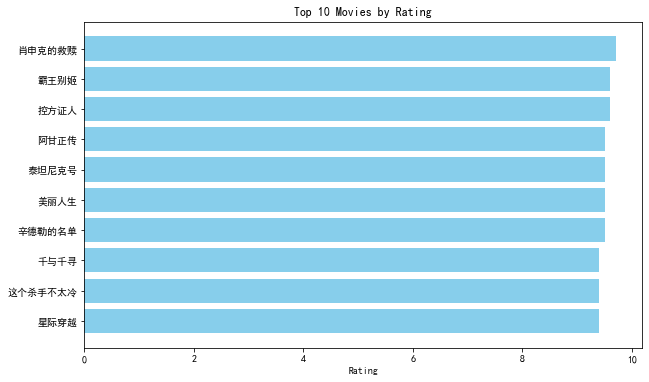
# 评分与投票数的散点图
plt.figure(figsize=(10, 6))
plt.scatter(data['votes'], data['rating'], alpha=0.7, color='coral')
plt.title('Relationship between Votes and Rating')
plt.xlabel('Number of Votes')
plt.ylabel('Rating')
plt.grid(True)
plt.show()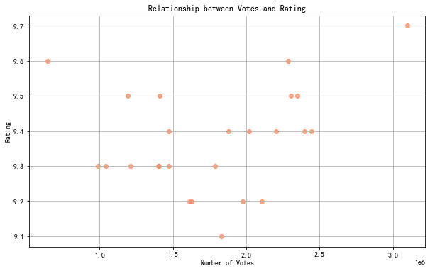
pratice4
douban_data = pd.read_csv(douban_file_path)
imdb_data = pd.read_csv(imdb_file_path)
#1. 平台平均评分比较
douban_avg_rating = douban_data['rating'].mean()
imdb_avg_rating = imdb_data['rating'].mean()
# 可视化平均评分比较
platforms = ['Douban', 'IMDb']
ratings = [douban_avg_rating, imdb_avg_rating]
plt.figure(figsize=(8, 6))
plt.bar(platforms, ratings, color=['skyblue', 'coral'])
plt.title('Average Ratings: Douban vs IMDb')
plt.ylabel('Average Rating')
plt.show()
# 创建中英文标题映射
title_mapping = {
'肖申克的救赎': 'The Shawshank Redemption',
'阿甘正传': 'Forrest Gump',
'泰坦尼克号': 'Titanic',
'千与千寻': 'Spirited Away',
'美丽人生': 'Life Is Beautiful',
'这个杀手不太冷': 'Leon: The Professional',
'星际穿越': 'Interstellar',
'盗梦空间': 'Inception',
'辛德勒的名单': "Schindler's List",
'无间道': "Infernal Affairs",
'三傻大闹宝莱坞': "3 Idiots"
}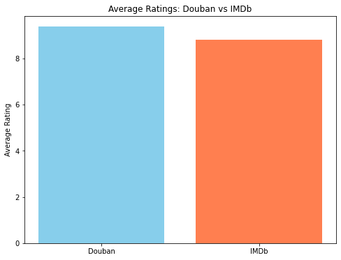
douban_data['mapped_title'] = douban_data['title'].map(title_mapping)
overlap_movies = pd.merge(douban_data, imdb_data, left_on='mapped_title', right_on='movie_title', how='inner')
print("Movies appearing on both platforms:")
print(overlap_movies[['title', 'rating_x', 'rating_y', 'year']])
# 上映年份分布
plt.figure(figsize=(10, 6))
plt.hist(imdb_data['year'], bins=20, color='coral', alpha=0.7, edgecolor='black')
plt.title('Distribution of Movie Release Years (IMDb)')
plt.xlabel('Year')
plt.ylabel('Number of Movies')
plt.grid(axis='y', linestyle='--', alpha=0.7)
plt.show()
# 4. 类型分布
if 'genre' in imdb_data.columns:
# 拆分类型列并统计分布
genre_series = imdb_data['genre'].str.split(',').explode()
genre_counts = genre_series.value_counts().head(10) # 显示Top 10类型
plt.figure(figsize=(10, 6))
genre_counts.plot(kind='bar', color='skyblue', edgecolor='black')
plt.title('Top 10 Movie Genres (IMDb)')
plt.xlabel('Genre')
plt.ylabel('Count')
plt.xticks(rotation=45)
plt.show()Movies appearing on both platforms:
Empty DataFrame
Columns: [title, rating_x, rating_y, year]
Index: []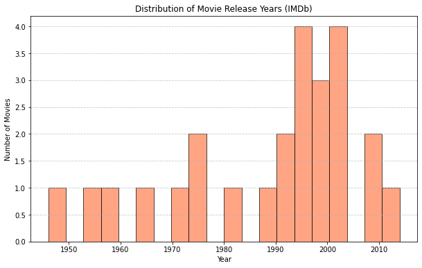